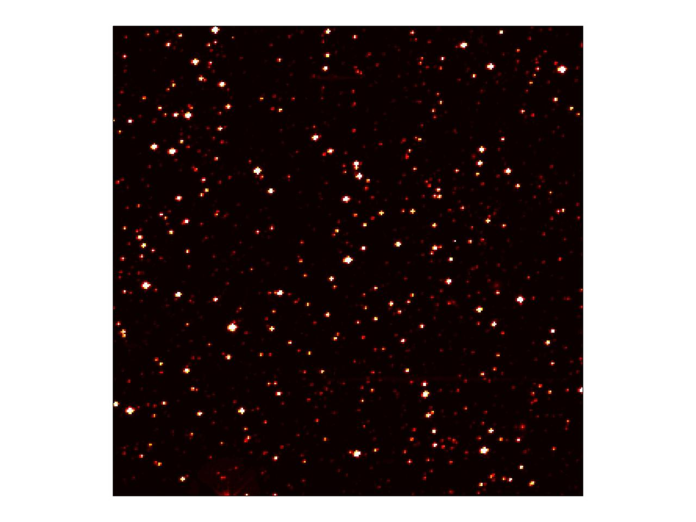
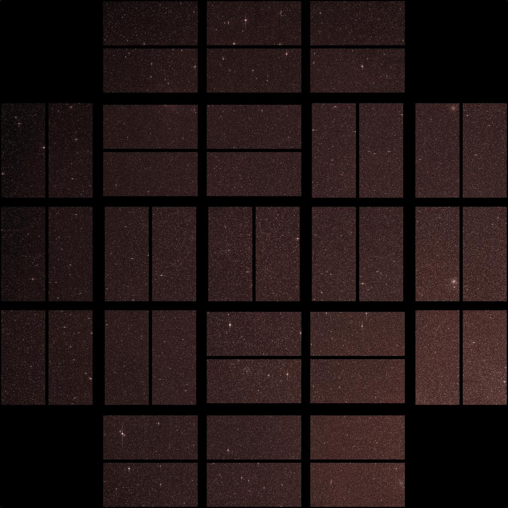

Left to right is time
0 is the middle, when the planet is straight in front of the star.
Numbers on the left are hours before that moment. Numbers on the right are hours after.
TrES-2 is a star with a planet that passes in front of it about every 2.5 days. During that crossing, called a transit, the star looks a little dimmer because the planet blocks a small part of its light. The chart plots that change: relative flux, brightness compared with normal, against hours around the middle of the transit.


0 is the middle, when the planet is straight in front of the star.
Numbers on the left are hours before that moment. Numbers on the right are hours after.
1.00 means the star looks as bright as usual.
The dip, near 0.98, means it looks a little dimmer. The planet is blocking a small part of its light.
Hover over the chart to inspect a measurement.